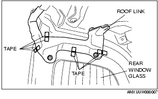
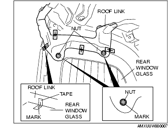
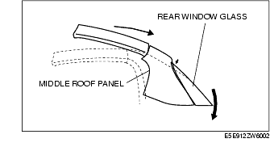
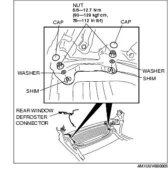
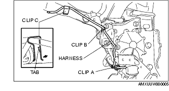
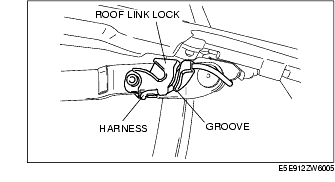
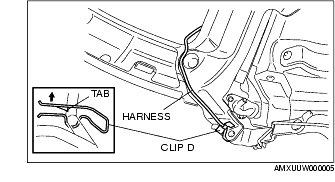

Workshop Manual ➭ BODY & ACCESSORIES ➭ GLASS/WINDOWS/MIRRORS ➭ REAR WINDOW GLASS REMOVAL/INSTALLATION [POWER RETRACTABLE HARDTOP]
REAR WINDOW GLASS REMOVAL/INSTALLATION [POWER RETRACTABLE HARDTOP]
id0912008081i8
{: #wp1059781}
-
Unlock the top lock.
-
Fully open the deck panel.
-
Cover both sides of the rear window glass with thick cloth to protect the window.
-
Remove the battery cover.
-
Disconnect the negative battery cable.
(See BATTERY REMOVAL/INSTALLATION [L8, LF].)
- Remove the following parts:
(1) Console (See CONSOLE PANEL REMOVAL/INSTALLATION.) {: #wp1059855}(2) Quarter trim (See QUARTER TRIM REMOVAL/INSTALLATION.) {: #wp1059873}(3) Scuff plate (See SCUFF PLATE REMOVAL/INSTALLATION.) {: #wp1059891}(4) Tire house trim (See TIRE HOUSE TRIM REMOVAL/INSTALLATION.) {: #wp1059909}(5) Aeroboard (See AEROBOARD REMOVAL/INSTALLATION.) {: #wp1059927}(6) Front seat back bar garnish (See SEAT BACK BAR GARNISH REMOVAL/INSTALLATION.) {: #wp1059945}(7) Back trim (See BACK TRIM REMOVAL/INSTALLATION.) {: #wp1059963}(8) Seat belt upper anchor installation bolt (See SEAT BELT REMOVAL/INSTALLATION {: #wp1059975}(9) Power retractable hardtop link bracket (See POWER RETRACTABLE HARDTOP LINK BRACKET REMOVAL/INSTALLATION {: #wp1059990}(10) Rear side trim (See REAR SIDE TRIM REMOVAL/INSTALLATION.) {: #wp1060005}(11) Cab-side weatherstrip (See CONVERTIBLE TOP DISASSEMBLY/ASSEMBLY {: #wp1060023}(12) Power retractable hardtop (See POWER RETRACTABLE HARDTOP REMOVAL/INSTALLATION
*Note*{: #wp1060054}
• The number of shims varies depending on the location of the rear window glass installation nut. Adjustment will be easier by verifying the number of shims to be used before removing the rear window glass.
-
Disconnect the filament connector.
-
If the rear window glass or the middle roof panel is to be reused, remove it using the following procedure.
*Note*{: #wp1060092}
• If the rear window glass or middle roof panel is to be used, positioning and adjustment during installation will be easier by placing marks for the installation before removal. {: #wp1062844}• Placing marks is not necessary if the rear window glass or middle roof panel is to be replaced with a new one because there will be no marked positions.
(1) Affix masking tape to the position shown in the figure.

*Note*{: #wp1060147}
• Mark the roof link and rear window glass at 4 locations as shown in the figure.
(2) Apply positioning marks to the masking tape.

{: #wp1060165}(3) Apply a positioning mark to the exterior circumference of the nuts.
- Move the power retractable hardtop in the open direction as shown in the figure until it is separated from the middle roof panel.{: #wp1060202}

- Remove the cap.{: #wp1060229}

-
Remove the nuts and washers.
-
Remove the shims.
-
Remove the rear window glass.
-
Remove the rear window defroster.
-
Install in the reverse order of removal.
Rear Window Defroster Installation Note
-
Remove the connector from the roof motor bracket.
-
Remove the wiring harness from clip A.{: #wp1060326}

-
Remove clip B, then remove clip C while pulling it in the direction shown by the arrow avoiding the tab.
-
Remove the wiring harness from the roof link lock groove.{: #wp1060363}

- Remove clip D while pulling it in the direction shown by the arrow avoiding the tab.{: #wp1060390}

Rear Window Glass Installation Note
Rear window glass or middle roof panel is newly replaced
- Adjust the rear window glass and middle roof panel gap and height difference so that it is within the specification. (See POWER RETRACTABLE HARDTOP ADJUSTMENT.)
Rear window glass or middle roof panel is reused
-
Install the shim according to the number verified prior to removal.
-
Align the alignment marks applied before the rear window glass removal, install the rear window glass, and then remove the masking tape.
-
Refer to POWER RETRACTABLE HARDTOP ADJUSTMENT and verify that the gap and height difference between the rear window glass and middle roof panel are within the specifications. Adjust the power retractable hardtop if necessary. (See POWER RETRACTABLE HARDTOP ADJUSTMENT.)